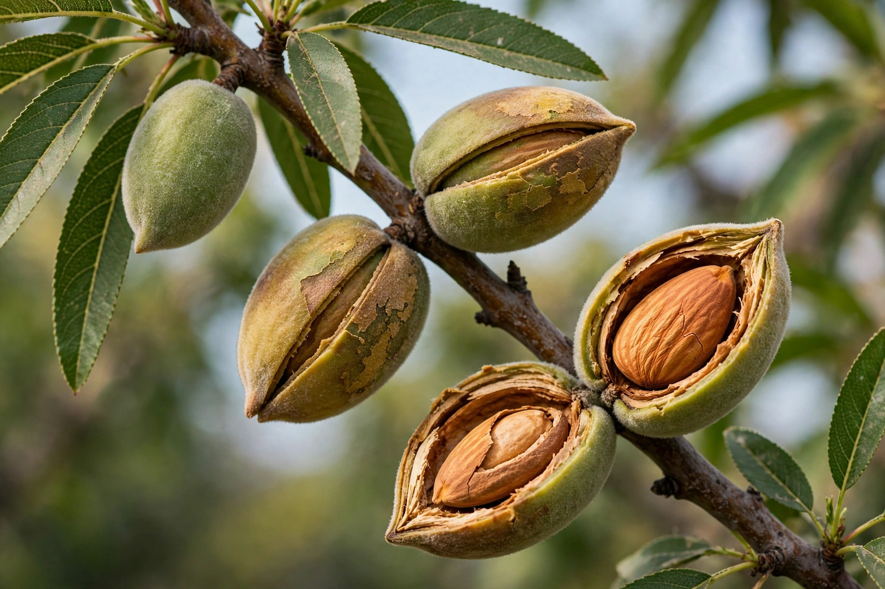

Wikipedia — the free encyclopedia

| Kingdom | Plantae |
| Family | Rosaceae |
| Genus | Prunus |
| Species | P. amygdalus |
The almond (Prunus amygdalus) is a species of tree from the genus Prunus, native to the Mediterranean climate regions of the Middle East. The almond is also the name of the edible and widely cultivated seed of this tree — botanically the kernel of a drupe, not a true nut. Wild almonds contain the glycoside amygdalin, which can release hydrogen cyanide; domesticated sweet almonds were selected to lack this bitterness and toxicity.
California produces the large majority — around 80% — of the world's almonds, most in the Central Valley, where orchards depend on rented honey-bee colonies for pollination, the largest managed pollination event on Earth. Australia and Spain are other significant producers. Almond cultivation is water-intensive and has been part of debates over water use in drought-prone California.
Almonds are eaten raw or toasted, ground into flour and marzipan, pressed for oil, and processed into almond milk and almond butter. Bitter almonds are used in small amounts for flavouring and in cosmetics.